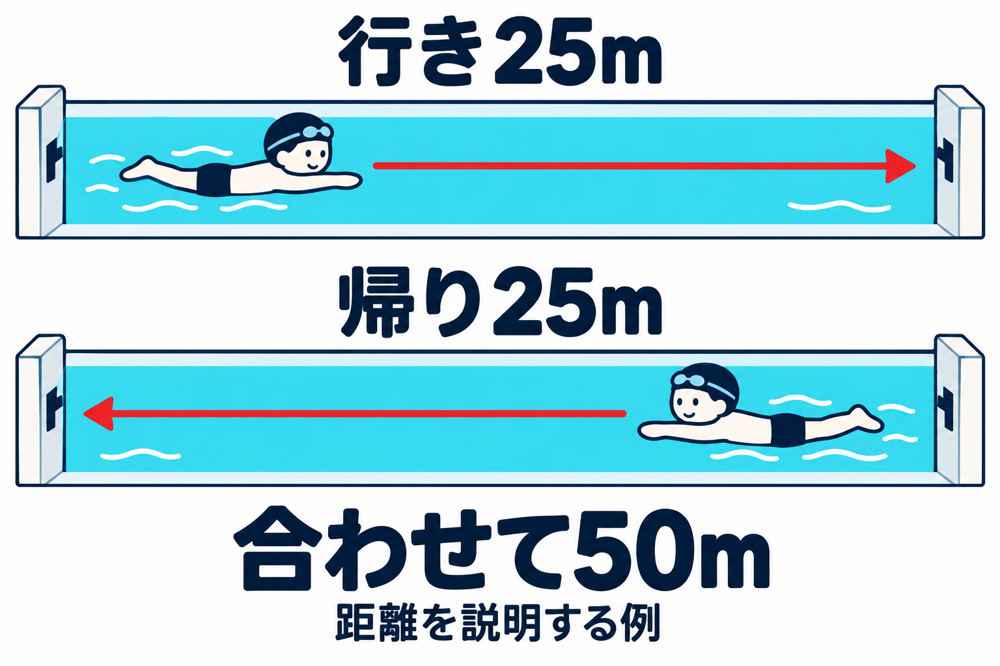
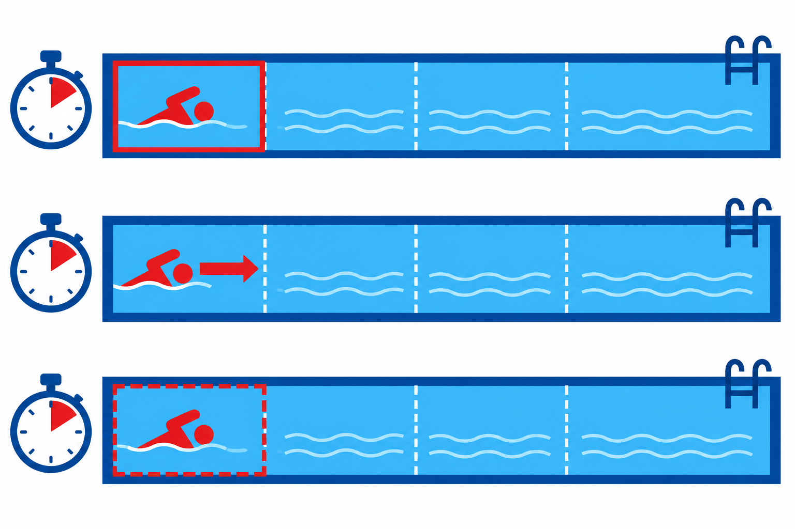
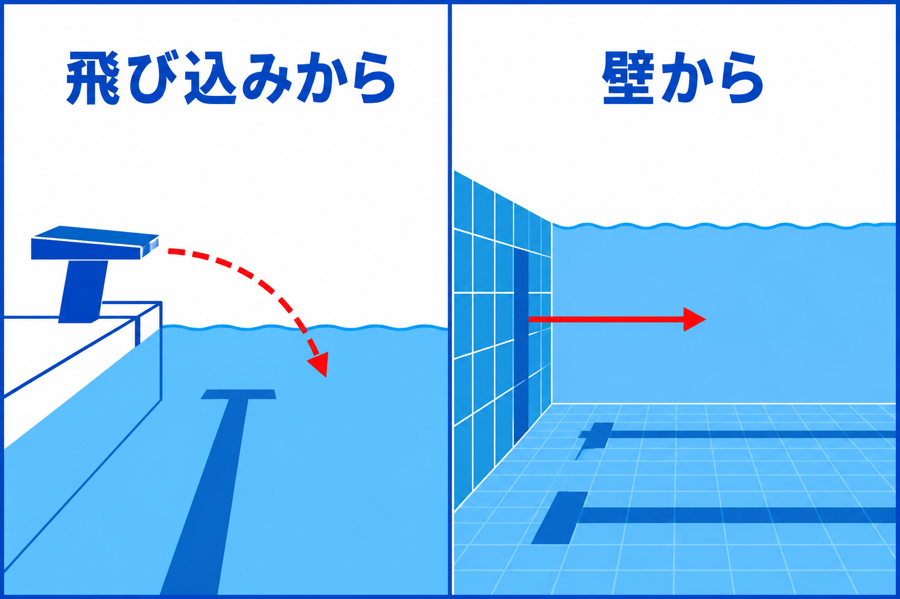
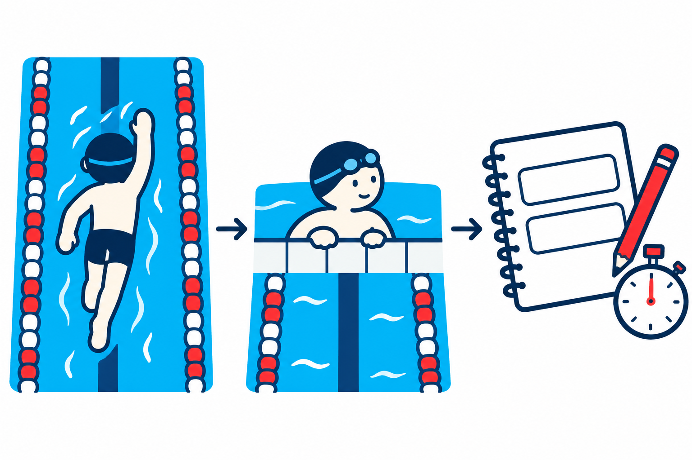

SWIMMING RESEARCH / 13
最初から飛ばす？ 泳ぐペースを考える
2026年10月30日 · ペース配分と区間の見方

泳ぎ始めは気持ちよく進むのに、折り返すと急に苦しくなる。そんなとき、「もっと体力をつけなきゃ」と思うかもしれません。でも、途中で速さが落ちる理由を、体力だけに決めなくても大丈夫です。最初の泳ぎ方と、最後までの泳ぎ方を分けて見てみましょう。
ペース配分は、決めた距離のどこで、どのくらいの速さで泳ぐかという組み立てです。 ただし、「最初は必ずゆっくり」が答えではありません。競泳選手の研究でも、出だしを速くすればよいとも、遅くすればよいとも、一律には言えませんでした。自分の泳ぎでは、最初の気持ちよさだけでなく、終わりまで含めて確かめることが出発点になります。
1｜最初の速さと、最後までの速さは違う
たとえば、いつも無理なく泳げる50mを、25mプールで一往復するとします。行きの25mだけを見れば、速く飛び出した泳ぎがよさそうに見えるかもしれません。でも、帰りの25mで大きく遅くなったなら、一往復ではどうでしょう。前半だけでは、全体の結果は分かりません。
たとえばAの泳ぎは、行きが20秒、帰りが30秒で、合わせて50秒。Bは行きが22秒、帰りが26秒で、合わせて48秒だったとします。これは足し算を説明する仮の数字で、研究の結果ではありません。 前半だけならAが先。でも、最後の壁に着くまでならBのほうが短い時間です。
一つの区間と、全体を分けて見る

研究結果でも、目標タイムでもありません。
Bは前半が2秒長くても、後半が4秒短い。全体では2秒短くなります。
Aは20秒、Bは22秒。前半はAのほうが2秒速い。
Aは50秒、Bは48秒。全体はBのほうが2秒速い。
前半の時間と後半の時間を足して、初めて一往復の時間が分かります。 「最初に先へ進めた」だけで、最後までよかったとは決められないのです。この一往復は考え方を説明する例で、50mを泳ぐよう全員に勧めているわけではありません。
もう一つ、時間と分けておきたいのが「きつさ」です。同じ速さで進んでいても、後半のほうが苦しく感じることはあります。「きつさが増した」だけで「速く泳げた」とは判断できません。反対に、楽に感じたからといって、必ず遅かったとも限りません。時計が教える進み方と、自分が感じた負担は、別々に残すと考えやすくなります。
ペースを考える目的も、人によって違います。大会なら、決めた距離の合計タイムが大切です。普段の練習なら、最後まで呼吸を続けられることや、慌てずに泳げることを見たい日もあります。まず「今日は何を確かめたいのか」を一つ決めると、速いか遅いかだけで自分の泳ぎを採点せずに済みます。
2｜出だしを変えると、速くなるとは限らない
Skorskiらは2014年、平均18歳の競泳者15人に、400m自由形を三つの条件で泳いでもらいました。最初は自分でペースを決め、その後は最初の100mを、その泳ぎより速くする条件と遅くする条件を比較しています。400mのうち100mなので、変えたのは距離の最初の4分の1です。研究の抄録
全体の平均タイムは、自分で決めた条件が4分35.0秒、出だしを速くした条件が4分38.5秒、遅くした条件が4分37.5秒でした。平均では、自分でペースを決めた泳ぎがいちばん短い時間です。研究者は、見つかった差が偶然のばらつきだけでは説明しにくいかも調べています。速く始めた条件との差はその判断基準を満たしましたが、遅く始めた条件との差は明確ではありませんでした。出だしを変えるだけで、いつもの泳ぎよりよくなったわけではなかったのです。
変えたのは、最初の4分の1

4つは同じ距離。色は変更した場所で、速さを表しません。
下の3つのカードで、400m全体の平均を比べます。
Skorskiら2014、15人。個人の目標値ではありません。遅く始めた条件との差は明確ではありません。同じ人が、同じ400mで比べる
400m全体の配分を自分で選ぶ。全体の平均：4分35.0秒。
最初の100mを、自分で選んだときより速くする。全体の平均：4分38.5秒。
最初の100mを、自分で選んだときより遅くする。全体の平均：4分37.5秒。
つまり、この研究からは「出だしを遅くすれば全員が速くなる」とは言えません。同時に、「自分のいつもの配分が誰にとっても完成形」とも言えません。参加者が少なく、競泳の経験がある人たちがレースを想定して泳いだ比較で、個人による違いもあります。初心者の日常練習や、25mの全力泳へ、そのまま移す結果ではありません。
この研究を普段の泳ぎに読み替えるなら、「出だしだけを変えたつもりでも、最後までの結果を見よう」という問いが残ります。序盤で前に出た感覚と、最後まで泳いだ結果は同じではない。一つの区間だけで方法の良し悪しを決めず、全体を見て戻すことも、練習でできる判断です。
3｜上手な選手の配分を、そのまままねしない
では、上級者はずっと同じ速さなのでしょうか。Maugerらが国内・国際大会の高水準の400m自由形のレース記録264回分を調べた研究では、序盤が速くその後はおおむね一定の形や、序盤と終盤が速く中盤が落ち着く形が多く見られました。264回分は記録の数で、264人という意味ではありません。ただし、多く見られたこの泳ぎ方が、ほかの泳ぎ方よりよい成績につながっていた、とまでは確認できませんでした。研究の抄録
これは、実際のレースでどの形が多かったかという観察です。同じ人へ別の配分を指示し、「この形にすれば速くなった」と確かめた実験ではありません。多くの選手が使っていたことと、自分にいちばん合うことは、分けて考える必要があります。
出発の条件も確かめる

飛び込みと水中で進む部分も、区間の時間に入る。
壁での動きと、その後の泳ぎも時間に入る。
たとえば、好きな選手の記録を見て「最初が速いから、私も最初から腕を急いで回そう」と考えたとします。その前に、スタートの場面を思い浮かべてください。
区間の時間を見るときには、条件も確認します。飛び込みで始まる最初の区間と、壁を蹴って始まる次の区間では、出発の仕方が違います。25mプールと50mプールなら、同じ合計距離でも壁へ着く回数が違います。区間の時間は、腕や脚で泳いでいる部分だけを取り出した数字ではありません。最初の区間が速いことだけで、「最初から腕を全力で回していた」とは分かりません。
泳ぐ距離も変われば、問いが変わります。ここで読んだ中心の研究は400mです。50mを速く泳ぎ切る場合や、もっと長い距離をゆったり泳ぐ場合に、同じペースの組み立てを勧める根拠にはなりません。目標の距離、泳力、練習か大会かを合わせたうえで参考にします。上級者のグラフは正解の型紙ではなく、自分の泳ぎを見直すための問いをくれる資料です。
4｜次の練習は、前半と後半をセットで見る
次は、本記事の観察案です。研究と同じ400mのテストをする必要はありません。監視員のいるプールで、普段から無理なく泳げる距離を選びます。まだ短い距離で苦しくなる場合は距離を伸ばさず、指導者と呼吸や姿勢を確認することを優先してください。
最初は、いつもの楽な泳ぎを一回。終わったら安全に壁につき、前半と後半で、慌ただしさや呼吸の続けやすさがどう違ったかを振り返ります。区間の時間を見てもらえるなら、同じ長さの区間を二つに分けて記録します。泳ぎながら時計を見ようとして、周囲への注意を失わないようにします。時間を測ってもらえなければ、感覚だけの記録でも構いません。その場合、速くなったとは判定しません。
泳ぐ・休む・前後を振り返る

- 1慣れた距離を泳ぐ
いつもの楽な速さ。前半と後半の様子を見る。
- 2十分に休んで一つ変える
次は出だしだけ少し落ち着かせる。呼吸を我慢しない。
- 3目的に合わせて選ぶ
楽さと全体の時間を分けて記録。別の日にも確かめる。
十分に休んでから、別の一回では、出だしの慌ただしさだけを少し減らしてみます。たとえば、最初から腕を急いで回そうとせず、慣れた呼吸を続けられる速さで入る、という一つの変更です。全員に同じ腕の回数を指定するものではありません。腕を大きくする、キックを変える、息継ぎ回数まで変える、といくつも重ねないこと。距離や泳法、壁からの出方、練習場所をできる範囲でそろえます。「何秒遅く」は一律に決めません。大きく速さを変える実験や、息を止めて我慢する練習ではありません。
比べた後は、結果に合わせて次を選びます。後半の慌ただしさが減り、全体の時間もほぼ同じなら、その出だしを別の日にも確かめる価値があります。楽になっても全体が遅くなったなら、それが失敗とは限りません。楽に泳ぐ日には合うかもしれませんが、記録を狙う配分が改善したとは別の話です。後半も変わらず苦しいなら、さらに無理に抑え続けず、距離や呼吸・姿勢も指導者と見直します。
一回の比較には、疲れや慣れ、混雑の影響もあります。今日の一回で永久に決めず、「前半を変えると、後半はどうだった？」という短いメモを残しましょう。ペース配分は、ただ我慢を長持ちさせるためのものではありません。最初の一瞬ではなく、最後までの自分を見て、泳ぎ方を選ぶこと。 その視点が一つ増えれば、次の一本は、前より具体的な問いを持って泳げます。
参考文献と確認範囲
- Skorski S, et al. (2014). Influence of pacing manipulation on performance of juniors in simulated 400-m swim competition. International Journal of Sports Physiology and Performance, 9(5), 817–824. PubMed・抄録
- Mauger AR, Neuloh J, Castle PC. (2012). Analysis of pacing strategy selection in elite 400-m freestyle swimming. Medicine & Science in Sports & Exercise, 44(11), 2205–2212. PubMed・抄録
2本とも書誌と抄録を確認しました。全文の細かな実験手順までは確認していません。図は内容を理解するための模式図で、実際の選手の動き・水流・レース記録を再現したものではありません。第4章は研究から直接検証された練習メニューではなく、本記事の観察案です。